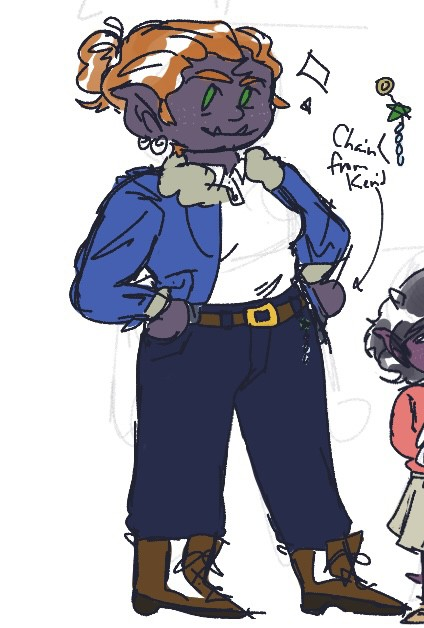

In the city of Ghost-Like-Moon circa 2015, the world stops. Well, at least for detective Demir Thornbite, mail-carrier Shegur Greylock, HR manager at Thrall-Mart Liam Knee Sun, and paladin-librarian Marsha Outwalker Persnickety it does. The mayor has been murdered, and if his death goes unsolved, who will sign their paychecks? But as the party investigates this gruesome scene, they start to unravel a much larger plan at play. A once long dead hero paladin returns to the mortal plane hungry for the powerful draconic magic he once sought alive, and he'll stop at nothing to have even a fraction of it. Will our ordinary city-folk step up to the roles of local heroes to put an end to this terror before it's too late? Will they have what it takes to bring down the horrible undead monster threatening their home? And by the gods will someone please tell them if they're getting paid for this??
Demir Thornbite, Owlin Rogue
Demir was born and raised in Ghost-Like-Moon, and has never known a day of peace as a homicide detective. There’s always scenes to investigate, leads to follow, and piles and piles of paperwork to complete. Not that you’d ever find him complaining, though. If he buries himself in his work, maybe the ache in heart will stop being so awful. He’s the first to the city hall when the mayor is murdered, and what was going to be an open-and-close case quickly unfurls into something much deeper. Accompanied by his friend, the wife of a man he was investigating the disappearance of, and this weird little kobold, Demir learns to be comfortable with the squirming feelings he’s been avoiding by being thrown into the deep end- literally, multiple times. When he’s not being drowned to cure his lycanthropy (long story), Demir opens up to his new, odd family and rediscovers what it means to let people in.
Liam Knee Sun, Goliath Barbarian
Liam once had dreams of being an adventurer. Back when he was young, hopeful, and had more hair. It’s something he continued to secretly think about during smoke breaks hiding from his crazed necromancer retail supervisor at Thrall-Mart. So when he finds himself roped into this mystery about the mayor’s death and magic bones in a far-away mountain, he follows his friends into dangerous territory of mind-games with people long dead to him- literally and figuratively. Now at a crossroads of emotions and responsibility, Liam has to do everything he can to finally bring to rest what haunts his past before it’s too late for the people he has now.
Shegur Greylock, Half-Orc Barbarian

All Shegur wanted was a family. Abandoned by her father as a baby and unloved by her mother, she ran away from her home tribe when she was barely old enough. Along her new path, she met a nice young man and knew he was the one… until he disappeared, too. Left only with a mysterious note and their young daughter to care for, Shegur made the most of what she had left. And now the mayor has been murdered, and somehow she’s gotten herself involved. During their impromptu quest, she reconnects with people she never thought she’d see again and is given a second chance to find community. And by the end of it all, she finds her family is as big and loving as ever.
The world is not built for folks like Marsha. A tiny 2 foot kobold in (what is to her) a big, big city, she’s learned to be creative. After getting a degree in library science, she moves to Ghost-Like-Moon to get a job as a librarian, but there’s something odd going on in this town. These strange raccoons keep stalking her after work and the library basement is full of misunderstood creatures and monsters, and Marsha isn’t one to let things go over her head (metaphorically, anyway, lots of physical things do). She throws herself into the scene at City Hall and discovers she’s more connected in all this than she thought. Their journey takes her back to her home-cave in the Drakespine Mountains when an ancient magic is stolen from her family, and she’s met with continuous hurdle after hurdle getting it back. At the summit of their quest, Marsha takes all she’s learned, all that she’s changed and become, to bite back the hand that harms her kin, blood or otherwise.